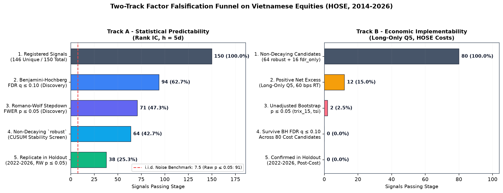
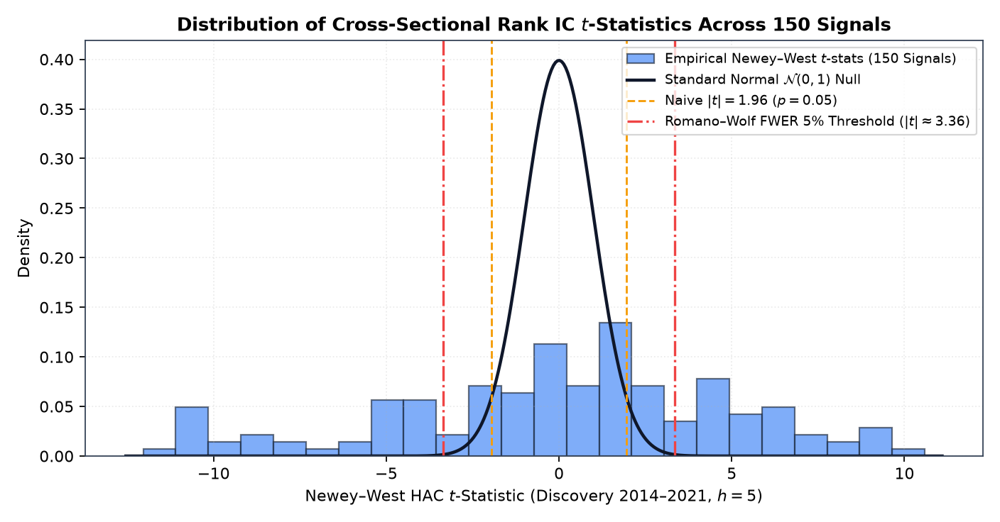
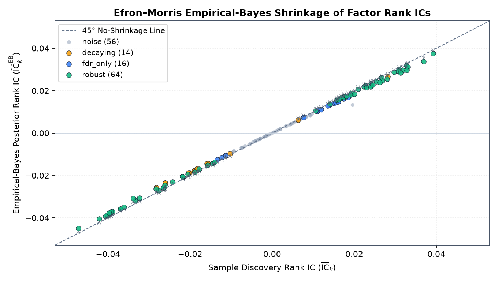
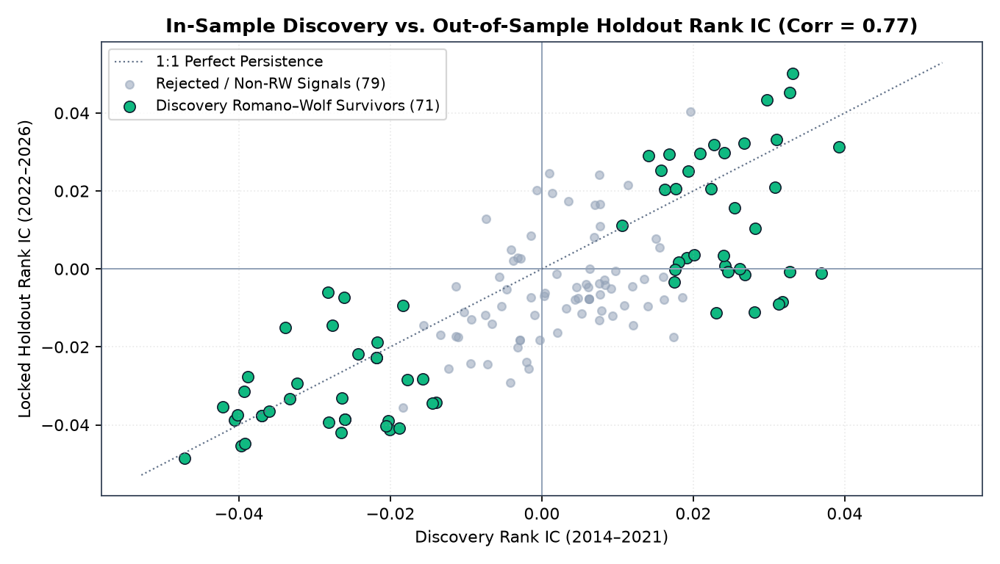
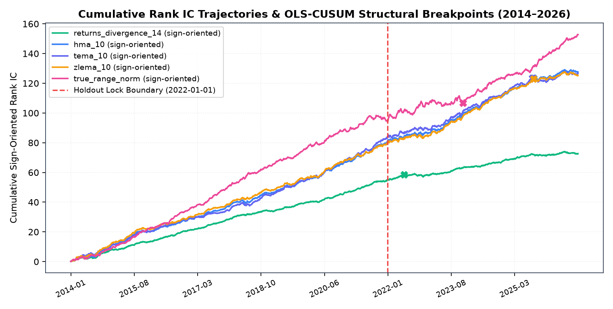
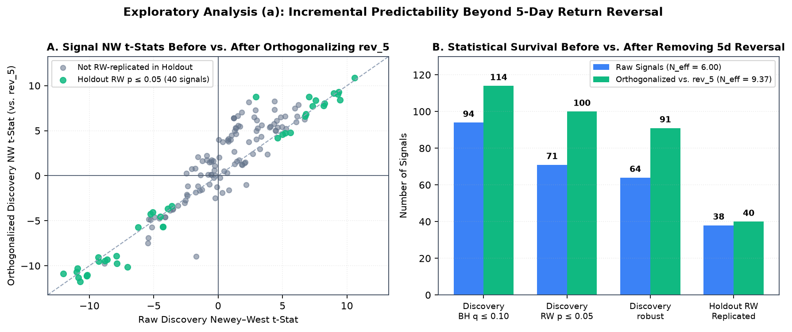
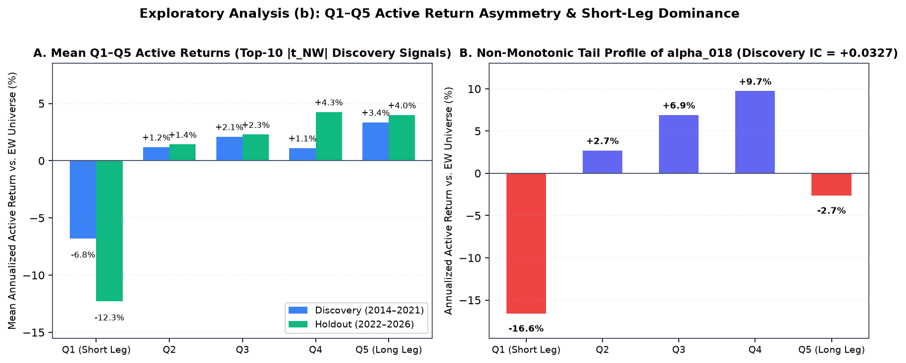
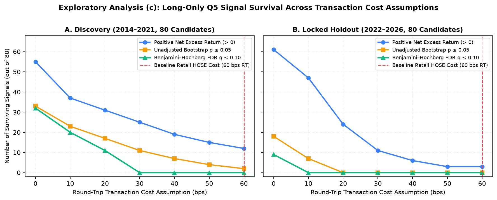

How Many Technical and Formulaic Alphas Survive Multiple-Testing and Transaction-Cost Falsification on Vietnamese Equities?¶
Pre-Specified Empirical Study (
polars-antaFactor Zoo) Analysis-Plan Commit:4c1a4b559d22a1367ce46b513ab7ff1079fff360(PREREGISTRATION.md) Signal Registry SHA-256:8aa3c11b97810083b875084d38cfda6df1994de38ec9b077faeaf46dc31c948c(\(K = 150\) signals, \(146\) unique)
1. TL;DR¶
- 150 signals collapse to ~6 effective independent dimensions (\(N_{\text{eff}} = 6.00\)): Out of 150 pre-specified daily OHLCV signals (146 unique after accounting for 4 exact duplicate pairs) evaluated at default parameters on the point-in-time top-150 liquid Ho Chi Minh Stock Exchange (
HOSE) universe during Discovery (2014-01-01to2021-12-31, \(1{,}998\) trading days, \(h = 5\) open-to-open days), 91 pass raw Stationary Bootstrap \(p \le 0.05\) (95 have Newey–West \(|t| \ge 1.96\), vs. \(7.5\) expected by chance under independence). Eigenvalue decomposition of the \(150 \times 150\) daily IC correlation matrix reveals an effective independent test count of \(N_{\text{eff}} = 6.00\) (\(\lambda_1 = 55.21\), top 5 principal components explain \(66.6\%\) of variance; \(N_{\text{eff}} = 6.13\) across the 146 unique signals). - The dominant short-horizon reversal factor is statistically genuine and replicates out of sample: After joint multiple-testing correction and OLS-CUSUM structural stability screening, 94 signals pass Benjamini–Hochberg FDR (\(q \le 0.10\)), 71 pass Romano–Wolf stepdown FWER (\(\alpha \le 0.05\)), and 64 are classified as structurally stable (
robust) while 14 are flagged asdecaying. In the locked Holdout sample (2022-01-01to2026-11-10, \(1{,}202\) valid \(5\)-day return sessions), cross-sectional Rank IC correlates at \(r = 0.77\) (\(0.7675\)) with Discovery across all 150 signals, and 38 of the 64 (59.4%)robustdiscovery signals replicate under Romano–Wolf FWER (\(p_{\text{RW}} \le 0.05\)) with a median IC retention ratio of \(97.6\%\) (\(0.9764\)). - Zero standalone single-factor strategies survive long-only execution after retail
HOSEcosts: When the 80 non-decaying discovery survivors (64 robust + 16 fdr_only) are implemented as 5-day rebalanced, equal-weighted long-only top-quintile (Q5) portfolios against the equal-weight universe under retailHOSEexecution frictions (0.15%/side brokerage +0.10%/side slippage +0.10%statutory sell tax =30 bpsper unit of L1 weight turnover \(\sum_i |w_{i,t} - w_{i,t-1}|\), or60 bpsround-trip replacement cost), the top-6 \(|t_{\text{NW}}|\) fast mean-reversion signals face 5-day L1 turnover of1.28–1.74(63.8%–87.2%one-way) and breakeven cost ceilings of only-6.7–20.5 bpsround-trip (5.7–20.5 bpsamong the 5 with positive gross Q5 excess). Only 2 slower momentum signals (trix_15at \(+8.37\%/\text{yr}\), raw \(p = 0.0170\);tsiat \(+7.65\%/\text{yr}\), raw \(p = 0.0320\)) clear the cost hurdle at unadjusted \(p \le 0.05\), 0 survive Benjamini–Hochberg adjustment (\(q \le 0.10\)) across the 80 cost-stage candidates, and 0 survive in the locked Holdout. - Exploratory post-holdout diagnostics explain the gap between statistical IC and long-only net returns (§8.3): (a) Cross-sectionally orthogonalizing all 150 signals against 5-day close-to-close return reversal (
rev_5_rank) raises \(N_{\text{eff}}\) from \(6.00\) to \(9.37\) and leaves 91robustdiscovery signals, 40 of which replicate in Holdout under Romano–Wolf \(p_{\text{RW}} \le 0.05\); (b) Q1–Q5 active return decomposition shows that \(65.5\%\) of the top-10 signals' \(\text{Q5} - \text{Q1}\) spread in Discovery (\(90.0\%\) in Holdout) originates in the short leg (Q1 underperformance), which cannot be shorted onHOSE; and (c) evaluating round-trip costs across0–60 bpsshows that 0 standalone 5-day Q5 strategies survive BH \(q \le 0.10\) at any cost \(\ge 30\text{ bps}\) round-trip in Discovery or \(\ge 10\text{ bps}\) in Holdout.
2. Motivation¶
Modern empirical asset pricing faces a well-documented Factor Zoo problem: when researchers test hundreds of correlated technical indicators and formulaic alphas on the same historical panel, conventional single-hypothesis \(t\)-thresholds (\(|t| \ge 1.96\)) produce massive false-discovery rates (Harvey, Liu & Zhu 2016; Chordia, Goyal & Saretto 2020). While recent work shows that many equity anomalies share a common statistical component that replicates better than naive uniform priors suggest once shrunken via Empirical Bayes (Jensen, Kelly & Pedersen 2023), a critical gap remains between frictionless cross-sectional predictability (Rank IC) and net-of-cost implementability in emerging markets (Hou, Xue & Zhang 2020; Novy-Marx & Velikov 2016).
Rather than marketing polars-anta as a collection of "200+ fast alpha indicators", this study subjects the library's entire daily-OHLCV indicator and WorldQuant formulaic alpha catalog (\(K = 150\) scale-free signals) to a pre-specified statistical and economic falsification funnel on Vietnamese equities (HOSE), using the inference machinery built into polars_anta.inference.
3. Pre-Specified Analysis Plan & Anti-Data-Mining Protocol¶
To constrain hindsight bias, parameter tuning, and post-hoc threshold selection, the experimental design was specified and committed prior to running the discovery and holdout pipelines:
- Analysis Plan Document:
research/factor_zoo/PREREGISTRATION.md - Frozen Configuration:
research/factor_zoo/config.py - Frozen Signal Registry:
research/factor_zoo/registry.py - Git Analysis-Plan Commit Hash:
4c1a4b559d22a1367ce46b513ab7ff1079fff360 - Registry Canonical SHA-256:
8aa3c11b97810083b875084d38cfda6df1994de38ec9b077faeaf46dc31c948c - Programmatic Holdout Guard:
verify_preregistration_guard()inresearch/factor_zoo/pipeline.pyrefuses to execute--stage holdoutunless--unlock-holdoutis explicitly passed,PREREGISTRATION.mdis committed to Git, andgit status --porcelainconfirms zero uncommitted modifications toPREREGISTRATION.md,config.py, andregistry.py.
3.1 Deviations from the Analysis Plan & Timeline¶
Because the analysis plan was committed in the same repository session as data caching and pipeline execution rather than registered on an external third-party registry prior to data access, we refer to the protocol throughout this report as a pre-specified analysis plan and disclose the complete execution timeline and all deviations below (auto-derived from results/audit/timeline.txt):
| Commit / Event | Timestamp (+07:00) |
Description |
|---|---|---|
DATA_CACHE |
2026-11-10 23:41:01 +07:00 |
research/data/vn_daily.meta.json CreationTime (raw HOSE OHLCV panel cached) |
66bcaf0 |
2026-11-10 23:42:23 +0700 |
research: data loader and point-in-time universe |
c0df52e |
2026-11-10 23:48:37 +0700 |
research: signal registry |
4c1a4b5 |
2026-11-10 23:50:27 +0700 |
research: pre-register factor zoo study (registry sha256=8aa3c11b97810083b875084d38cfda6df1994de38ec9b077faeaf46dc31c948c) |
c793a02 |
2026-11-11 00:09:34 +0700 |
research: discovery pipeline and results |
4caec78 |
2026-11-11 00:11:39 +0700 |
research: holdout evaluation (unlocked after pre-registration 4c1a4b5) |
dacd8dc |
2026-11-11 00:16:37 +0700 |
docs(research): factor zoo report |
Disclosed Deviations:
- Data cached prior to analysis-plan commit (
DATA_CACHEvs.4c1a4b5): The rawHOSEdaily OHLCV panel (research/data/vn_daily.parquet, spanning2012-03-19to2026-11-10including the holdout period) was fetched and cached at2026-11-10 23:41:01 +07:00, approximately 9 minutes before the analysis-plan commit4c1a4b5(2026-11-10 23:50:27 +0700). - Internal review checkpoints bypassed during batch execution (
4c1a4b5\(\to\)c793a02\(\to\)4caec78): Internal review checkpoints between data collection, analysis-plan lock (4c1a4b5), Discovery execution (c793a02at2026-11-11 00:09:34 +0700), and Holdout unlock (4caec78at2026-11-11 00:11:39 +0700) were bypassed during batch execution; the holdout evaluation was executed 2 minutes after the Discovery commit without an intervening manual review pause. - Cost-stage candidate filter aligned with written specification prior to commit (
c793a02): During the first uncommitted run of the Discovery script, the cost-stage candidate filter selected signals withp_rw <= 0.05 OR q_bh <= 0.10(94 signals, including 14 signals classified asdecaying). Before committing Discovery inc793a02, the filter was updated to match the written specification (verdict in {"robust", "fdr_only"}), reducing the number of evaluated cost-stage candidates from 94 to 80 and leaving the confirmatory conclusion unchanged (0 survivors after Benjamini–Hochberg FDR \(q \le 0.10\)). - Unadjusted cost-stage \(p \le 0.05\) diagnostic count added post-hoc (
c793a02): The intermediate count of cost-stage candidates achieving unadjusted one-sided bootstrap \(p \le 0.05\) (n_cost_raw_p05 = 2:trix_15,tsi) was added inc793a02for diagnostic visibility; it is not a survival criterion inPREREGISTRATION.md(which requires BH \(q \le 0.10\)). - Four exact duplicate signal pairs in the frozen registry (
c0df52e): Post-hoc auditing (results/audit/duplicate_signals.json) identified 4 exact duplicate pairs (\(\max |\Delta \text{IC}_t| = 0.0\), \(\text{corr} = 1.0\)) among the 150 registered entries, yielding 146 unique signals (wma_10\(\equiv\)decay_linear_10,pivot_classic\(\equiv\)pivot_fibonacci,atr_14_norm\(\equiv\)natr_14, andzscore_20\(\equiv\)ts_zscore_20), plus 12 near-duplicate pairs with \(|\text{corr}| > 0.99\). To preserve the frozen SHA-256 hash ofregistry.py, all 150 entries remain in the primary tables, and an exploratory 146-unique-signal sensitivity check is reported in §8.3. - Correction of earlier Appendix A (
dacd8dc\(\to\)8efa20c): An earlier version of Appendix A in commitdacd8dclisted library functions that do not exist; it has been replaced in commit8efa20cby a table generated directly fromEXCLUDED_SIGNALSinregistry.py(10 export groups). - Post-hoc confirmation of
HOSEexecution and market parameters (4c1a4b5): TheHOSEexecution cost and market structure constants inconfig.py(0.15%/side brokerage,0.10%/side slippage,0.10%sell tax, no short selling, \(\pm 7.0\%\) daily price limit) were initialized from standard retail schedules at commit4c1a4b5and formally confirmed by the author post-hoc on2026-11-11.
4. Data & Point-in-Time Universe¶
4.1 Source & Sample Period¶
Daily OHLCV bars were retrieved from public Vietnamese equity market endpoints—primary VNDirect (api-finfo.vndirect.com.vn ticker directory and dchart-api.vndirect.com.vn daily history) with SSI iBoard (iboard-query.ssi.com.vn) as automatic fallback—for all 392 three-letter common equity tickers listed on the Ho Chi Minh Stock Exchange (HOSE), spanning 2012-03-19 through 2026-11-10 (1,138,548 raw ticker-day observations). The period 2012-03-19 to 2013-12-31 serves strictly as a warm-up buffer for rolling lookback windows and the 250-day listing-age filter.
4.2 Pre-Specified 3-Step Cleaning Pipeline¶
Executed deterministically in research/factor_zoo/data.py:
| Cleaning Step | Rule | Rows Removed | Remaining Rows |
|---|---|---|---|
| 0. Raw Feed | 392 HOSE 3-letter common stock tickers (2012-03-19–2026-11-10) |
— | 1,138,548 |
| 1. OHLCV Structural Audit | polars_anta.validate_ohlcv: drop rows violating \(H_t \ge \max(O_t, C_t, L_t)\), \(L_t \le \min(O_t, C_t, H_t)\), or positive price/volume invariants (high_lt_open = 1,078, low_gt_close = 886, low_gt_open = 771, high_lt_close = 411, high_lt_low = 1) |
2,888 |
1,135,660 |
| 2. Zero-Volume Filter | Drop non-trading / halted sessions with volume <= 0 |
46,474 |
1,089,186 |
| 3. Price-Limit Jump Filter | Drop daily close-to-close jumps $ | C_t / C_{t-1} - 1 | > 7.5\%$ (HOSE \(\pm 7.0\%\) limit \(+ 0.5\%\) tolerance) to remove unadjusted split/dividend discontinuities |
4.3 Point-in-Time Liquid Investable Universe (in_universe)¶
On each trading date \(t \in [\text{2014-01-02}, \text{2026-11-10}]\) (3,206 trading days), a stock enters the investable cross-section if and only if using information available at \(\text{close}_t\): 1. Cumulative trading history is at least 250 valid sessions, 2. Closing price \(C_{i,t} \ge \mathbf{5{,}000\text{ VND}}\), and 3. 60-session rolling median daily traded value (\(\text{close} \times \text{volume}\)) ranks in the top 150 eligible stocks on date \(t\).
This yields 463,707 ticker-day observations across 364 unique tickers (median 150.0 stocks/day, max 150, min 17 on the first days of 2014):
- Discovery Sample (2014-01-02 to 2021-12-31): 1,998 trading days, 282,507 universe rows, 340 unique tickers.
- Locked Holdout Sample (2022-01-01 to 2026-11-10): 1,208 trading days (1,202 sessions with complete 5-day forward open-to-open returns), 181,200 universe rows, 250 unique tickers.
5. Signal Registry & Scale-Free Normalization¶
All 150 daily-OHLCV-compatible signals in polars-anta are evaluated at their exact library default parameters (0 hyperparameter sweeps):
- Scale-Free Transformation: Price-level overlays (moving averages, bands, stops, pivots, channels) are mapped to dimensionless ratios relative to
close(e.g.,close / sma(close, 10) - 1, Bollingerpercent_b,(close - supertrend) / close,(close - pivot_p) / close). Multi-fieldpl.Structindicators select one canonical primary component (seeregistry.py). - Cross-Sectional Ranking: Each signal is computed per ticker (
.over("ticker")) and then mapped to a uniform cross-sectional percentile rank within the active universe on each day \(t\) viacs_rank(..., over="date"). - Two-Sided Testing: Every signal is tested once (
alternative="two-sided"), preventing researcher degrees of freedom in flipping factor signs.
6. Statistical & Economic Methodology¶
Full mathematical formulations and Monte Carlo size/power validations of the inference estimators are documented in docs/indicators/inference.md and docs/assets/inference_size_power.md.
- Target Return: Next-day open-to-open return over \(h = 5\) trading sessions, \(r_{i,t,5} = \text{open}_{i,t+6}/\text{open}_{i,t+1} - 1\). Signals observed at \(\text{close}_t\) are assumed executed at \(\text{open}_{t+1}\) (zero look-ahead bias).
- Cross-Sectional Information Coefficient (
ic_matrix): Daily cross-sectional Spearman rank correlation \(\text{IC}_{k,t}\) between factor \(k\)'s universe rank at \(\text{close}_t\) and \(r_{i,t,5}\). - Autocorrelation-Robust Inference (
falsify_factors): Because overlapping 5-day forward returns induce \(\text{MA}(4)\) serial correlation in daily \(\text{IC}_{k,t}\), standard errors use the Bartlett-kernel Newey–West HAC estimator with \(L = 4\) lags, and resampling uses the Politis–Romano (1994) Stationary Bootstrap with geometric block lengths (\(\text{mean\_block} = \max(5, T^{1/3}) = 12.60\), \(B = 2{,}000\),seed = 20261110). - Multiple-Testing Control (
adjust_pvalues,romano_wolf): - Benjamini–Hochberg (1995) FDR at \(q = 0.10\) across all \(K = 150\) signals.
- Romano–Wolf (2005, 2016) Stepdown FWER at \(\alpha = 0.05\), resampling all \(K = 150\) IC series using identical stationary block bootstrap indices to preserve the cross-factor dependence structure.
- Empirical-Bayes Effect-Size Shrinkage (
eb_shrink): Sample mean ICs \(\overline{\text{IC}}_k\) are shrunken toward zero (prior="zero") using the Efron–Morris (1973) / Jensen–Kelly–Pedersen (2023) empirical-Bayes precision weights \(\widehat{\text{IC}}^{\text{EB}}_k = \frac{\hat{\tau}^2}{\hat{\tau}^2 + s_k^2}\overline{\text{IC}}_k\). - Structural Break Screening (
cusum_mean_test): Brown–Durbin–Evans (1975) / Ploberger–Krämer (1992) OLS-CUSUM test with Newey–West long-run variance (\(L = 4\)). Statistically significant signals withp_cusum <= 0.05whose second-half \(|{\text{IC}}|\) is smaller than first-half \(|{\text{IC}}|\) are classified asdecaying. - Long-Only Transaction-Cost Stage (
bootstrap_test,breakeven_cost): Because short selling underlying equities is not practically available onHOSE, all non-decaying statistical survivors (verdict in {"robust", "fdr_only"}, \(80\) signals) are evaluated as long-only top-quintile (Q5) equal-weighted portfolios (oriented by discovery \(\text{sign}(\overline{\text{IC}}_k)\)), rebalanced every \(5\) trading days against the equal-weighted investable universe. Transaction costs deduct0.15%/side brokerage +0.10%/side slippage +0.10%statutory sell tax (30 bpsper unit of L1 weight turnover \(\sum_i |w_{i,t} - w_{i,t-1}|\), equivalent to60 bpsper full one-way portfolio replacement). Survival requires one-sided Stationary Bootstrap \(p \le 0.05\) on net active returns, BH \(q \le 0.10\) across cost-stage candidates, andbreakeven_cost\(> 30\text{ bps}\) L1 (60 bpsround-trip).
7. Confirmatory Empirical Results (\(h = 5\))¶
7.1 The Two-Track Falsification Funnel¶
Rather than conflating frictionless statistical rank predictability with long-only transaction-cost survival in a single non-monotonic table, the empirical funnel is separated into two monotonic tracks:
Track A — Statistical Predictability Funnel (Cross-Sectional Rank IC, \(h = 5\) Days)¶
| Stage | Signals | Share of Registry | Notes |
|---|---|---|---|
| A1. Tested in Registry | 150 | 100.0% |
146 unique signals + 4 exact duplicate pairs (\(N_{\text{eff}} = 6.00\)) |
| A2. Benjamini–Hochberg FDR \(q \le 0.10\) | 94 | 62.7% |
Raw Stationary Bootstrap \(p \le 0.05\): 91 (NW $ |
| A3. Romano–Wolf Stepdown FWER \(p_{\text{RW}} \le 0.05\) | 71 | 47.3% |
Joint studentized \(\max\)-\(t\) bootstrap across all 150 IC series |
A4. Structurally Stable (robust Verdict) |
64 | 42.7% |
RW \(p \le 0.05\) and non-decaying (+ 16 fdr_only, 14 decaying, 56 noise) |
A5. Replicate in Locked Holdout (2022-01-01–2026-11-10) |
38 | 25.3% |
38 of 64 (59.4%) pass Holdout RW \(p \le 0.05\) (49 or 76.6% pass BH \(q \le 0.10\); 54 or 84.4% retain sign) |
Track B — Economic Implementability Funnel (Long-Only Q5 vs. Equal-Weight Universe, HOSE Costs)¶
| Stage | Signals | Share of Registry | Share of 80 Candidates |
|---|---|---|---|
| B1. Non-Decaying Discovery Survivors Evaluated | 80 | 53.3% |
100.0% (64 robust + 16 fdr_only) |
B2. Positive Net Excess Return After HOSE Costs (60 bps RT) |
12 | 8.0% |
15.0% |
| B3. Unadjusted One-Sided Bootstrap \(p \le 0.05\) on Net Excess | 2 | 1.3% |
2.5% (trix_15, tsi) |
| B4. Survive Benjamini–Hochberg FDR \(q \le 0.10\) Across Cost Stage | 0 | 0.0% |
0.0% |
| B5. Confirmed Post-Cost Survivors in Locked Holdout | 0 | 0.0% |
0.0% |

7.2 Why 91 of 150 Signals Pass Raw \(p \le 0.05\): Effective Independent Tests (\(N_{\text{eff}} = 6.00\))¶
A researcher testing 150 indicators might assume they have conducted 150 independent experiments. Spectral decomposition of the \(150 \times 150\) daily Spearman IC correlation matrix in Discovery (2014–2021) refutes this:
- Largest Eigenvalue (\(\lambda_1\)): \(55.21\) (\(36.8\%\) of total variance across all 150 signals).
- Top 5 Principal Components: Explain \(66.6\%\) (\(0.6660\)) of total cross-signal IC variance.
- Participation Ratio (\(N_{\text{eff}} = (\sum \lambda_k)^2 / \sum \lambda_k^2\)): \(6.00\) (\(6.0041\)) effective independent dimensions.
Because the vast majority of technical oscillators, moving-average ratios, price-channel positions, and short-window WorldQuant alphas load heavily on the same underlying 5-day cross-sectional mean-reversion / overreaction factor on HOSE, when that single latent factor carries a strong \(t\)-statistic (\(|t| > 10\)), dozens of algebraically related indicators simultaneously clear \(|t| \ge 1.96\) and Romano–Wolf FWER thresholds.

7.3 Breakdown by Signal Family (Discovery 2014–2021, \(h = 5\))¶
| Family | Tested | Raw \(p \le 0.05\) | BH \(q \le 0.10\) | RW \(p \le 0.05\) | robust | fdr_only | decaying | Median \(|\text{IC}|\) | Median \(|\text{Posterior IC}|\) |
| :--- | ---: | ---: | ---: | ---: | ---: | ---: | ---: | ---: | ---: |
| trend | 28 | 18 | 19 | 16 | 16 | 3 | 0 | 0.0236 | 0.0220 |
| momentum | 22 | 15 | 15 | 9 | 9 | 6 | 0 | 0.0158 | 0.0146 |
| volatility | 20 | 12 | 12 | 9 | 3 | 0 | 9 | 0.0183 | 0.0172 |
| volume | 15 | 8 | 8 | 4 | 4 | 4 | 0 | 0.0109 | 0.0104 |
| stats | 13 | 7 | 7 | 5 | 5 | 0 | 2 | 0.0102 | 0.0098 |
| microstructure | 5 | 2 | 2 | 1 | 1 | 0 | 1 | 0.0114 | 0.0105 |
| alpha | 47 | 29 | 31 | 27 | 26 | 3 | 2 | 0.0162 | 0.0155 |
Notably, 9 out of 12 statistically significant volatility signals are flagged as decaying by the OLS-CUSUM test (p_cusum <= 0.05 with weaker second-half IC), demonstrating why static full-sample \(t\)-statistics are insufficient without structural stability screening.

7.4 Transaction-Cost Falsification Stage: Why High-IC Signals Fail Long-Only Execution¶
When the 80 non-decaying discovery survivors (64 robust + 16 fdr_only) are formed into 5-day rebalanced long-only top-quintile (Q5) portfolios against the equal-weight universe (descriptive ranges derived automatically in results/discovery/cost_stage_summary.json):
1. 68 of 80 candidates yield negative net active returns after HOSE fees, slippage, and sell tax (60 bps round-trip replacement cost; across all 68 negative-net signals, 5-day L1 turnover spans \(0.27\text{–}1.83\), or \(13.5\%\text{–}91.4\%\) one-way replacement, with annualized cost drag of \(4.1\%\text{–}27.6\%/\text{yr}\) and breakeven round-trip costs of \(-23.8\text{–}53.1\text{ bps}\)). The top-6 \(|t_{\text{NW}}|\) fast reversal signals (returns_divergence_14, hma_10, tema_10, zlema_10, true_range_norm, alpha_018) exhibit 5-day L1 weight turnover of \(1.28\text{–}1.74\) (\(63.8\%\text{–}87.2\%\) one-way portfolio replacement every 5 trading days), incurring an annualized cost drag of \(19.3\%\text{–}26.4\%/\text{yr}\), while their long-only top-quintile gross excess returns correspond to breakeven round-trip costs of only \(-6.7\text{–}20.5\text{ bps}\) (\(5.7\text{–}20.5\text{ bps}\) across the 5 signals with positive gross Q5 excess). Notably, alpha_018 has a strong positive cross-sectional Rank IC (\(\text{IC} = 0.0327\), \(t_{\text{NW}} = 10.59\)), yet its equal-weighted top-quintile (Q5) gross excess return vs. the equal-weight universe is slightly negative (\(-0.0005\) per 5 days, breakeven \(-6.7\text{ bps}\)) because its rank correlation is driven by extreme underperformance in the bottom quintiles (Q1–Q2) rather than outperformance in Q5 (see §8.3).
2. Only 12 signals—all slower trend/momentum smoothers with much lower 5-day L1 turnover (\(0.28\text{–}0.79\), or \(14.1\%\text{–}39.5\%\) one-way replacement, annualized cost drag \(4.3\%\text{–}11.9\%/\text{yr}\), breakeven \(68.1\text{–}129.8\text{ bps}\))—achieve positive net active return in Discovery:
| Factor | Verdict | Gross Excess (5d) | L1 Turnover (5d) | Net Excess (% Ann.) | Net IR (Ann.) | Raw Bootstrap \(p\) | BH \(q\) | Breakeven Cost (Round-Trip bps) |
|---|---|---|---|---|---|---|---|---|
trix_15 |
robust |
0.0031 | 0.48 | +8.37% | 0.71 | 0.0170 | 1.00 | 129.8 |
tsi |
robust |
0.0032 | 0.58 | +7.65% | 0.70 | 0.0320 | 1.00 | 112.7 |
kst |
robust |
0.0026 | 0.49 | +5.84% | 0.51 | 0.0555 | 1.00 | 107.1 |
awesome_osc |
robust |
0.0030 | 0.68 | +4.67% | 0.41 | 0.1069 | 1.00 | 87.4 |
frac_diff_04 |
robust |
0.0026 | 0.56 | +4.61% | 0.50 | 0.1439 | 1.00 | 92.5 |
dpo_20 |
fdr_only |
0.0030 | 0.70 | +4.56% | 0.39 | 0.1414 | 1.00 | 86.0 |
tii_30 |
robust |
0.0022 | 0.57 | +2.57% | 0.33 | 0.1949 | 1.00 | 77.9 |
adx_14 |
fdr_only |
0.0022 | 0.62 | +1.90% | 0.18 | 0.3003 | 1.00 | 72.1 |
coppock |
robust |
0.0027 | 0.78 | +1.79% | 0.16 | 0.3238 | 1.00 | 69.1 |
nvi_roc_20 |
robust |
0.0027 | 0.79 | +1.64% | 0.18 | 0.3048 | 1.00 | 68.2 |
squeeze_mom |
robust |
0.0026 | 0.78 | +1.58% | 0.14 | 0.3373 | 1.00 | 68.1 |
alpha_005 |
robust |
0.0011 | 0.28 | +1.21% | 0.14 | 0.3923 | 1.00 | 76.9 |
While trix_15 (\(p = 0.0170\)) and tsi (\(p = 0.0320\)) clear the unadjusted \(p \le 0.05\) threshold, neither survives Benjamini–Hochberg FDR correction (\(q \le 0.10\)) across the 80 cost-stage tests (\(80 \times 0.0170 > 1.0\)).
7.5 Locked Holdout Replication (2022-01-01 to 2026-11-10)¶
Unlocking the 2022–2026 holdout period (1,202 evaluated sessions) yields two central findings:
- Cross-Sectional Rank IC Persists Strongly Out-of-Sample:
- Across all 150 signals, the correlation between Discovery Rank IC (
2014–2021) and Holdout Rank IC (2022–2026) is \(0.77\) (\(0.7675\)). - Among the 64
robustdiscovery signals, 54 (\(84.4\%\)) retain the same IC sign in Holdout, 49 (\(76.6\%\)) pass Holdout BH FDR (\(q \le 0.10\)), and 38 (\(59.4\%\)) pass Holdout Romano–Wolf FWER (\(p_{\text{RW}} \le 0.05\)), with a median IC retention ratio \(\overline{\text{IC}}_{\text{holdout}} / \overline{\text{IC}}_{\text{discovery}}\) of \(0.98\) (\(0.9764\)). - Out-of-Sample Decay of
tsiandtrix_15Is Consistent With Cost-Stage BH Rejection (Illustrative, \(n = 2\)): - The last two rows of the table below (
tsiandtrix_15) were the only 2 signals with unadjusted post-cost \(p \le 0.05\) in Discovery (0.0320and0.0170), both rejected by Benjamini–Hochberg FDR control (\(q = 1.00\) across 80 candidates). In the locked2022–2026holdout, their Rank IC fell to \(-0.0011\) (\(t = -0.10\)) and \(-0.0089\) (\(t = -0.75\)) with full-sample OLS-CUSUMp_cusum = 0.009and0.013. Because \(n = 2\), this case is an illustrative example that is consistent with the multiple-testing penalty rather than standalone statistical proof.
| Factor | Family | Disc IC | Posterior IC | Disc NW \(t\) | Disc RW \(p\) | Breakeven (RT bps) | Holdout IC | Holdout NW \(t\) | Holdout RW \(p\) | Retention Ratio | CUSUM \(p\) |
|---|---|---|---|---|---|---|---|---|---|---|---|
returns_divergence_14 |
alpha |
-0.0276 | -0.0272 | -12.04 | 0.0005 | 5.7 | -0.0146 | -4.46 | 0.0010 | 0.53 | 0.004 |
hma_10 |
trend |
-0.0406 | -0.0392 | -11.01 | 0.0005 | 9.4 | -0.0387 | -6.26 | 0.0005 | 0.95 | 0.757 |
tema_10 |
trend |
-0.0421 | -0.0405 | -10.92 | 0.0005 | 20.5 | -0.0355 | -5.34 | 0.0005 | 0.84 | 0.656 |
zlema_10 |
trend |
-0.0402 | -0.0388 | -10.86 | 0.0005 | 9.9 | -0.0374 | -6.10 | 0.0005 | 0.93 | 0.506 |
true_range_norm |
volatility |
-0.0472 | -0.0450 | -10.71 | 0.0005 | 17.8 | -0.0486 | -5.15 | 0.0005 | 1.03 | 0.538 |
alpha_018 |
alpha |
0.0327 | 0.0319 | 10.59 | 0.0005 | -6.7 | 0.0453 | 9.92 | 0.0005 | 1.38 | 0.002 |
pivot_classic |
trend |
-0.0370 | -0.0358 | -10.19 | 0.0005 | 6.1 | -0.0376 | -6.37 | 0.0005 | 1.02 | 0.627 |
pivot_fibonacci |
trend |
-0.0370 | -0.0358 | -10.19 | 0.0005 | 6.1 | -0.0376 | -6.37 | 0.0005 | 1.02 | 0.627 |
pivot_woodie |
trend |
-0.0360 | -0.0349 | -10.18 | 0.0005 | 8.3 | -0.0366 | -6.33 | 0.0005 | 1.01 | 0.657 |
alpha_023 |
alpha |
0.0310 | 0.0301 | 9.47 | 0.0005 | 12.3 | 0.0332 | 6.83 | 0.0005 | 1.07 | 0.330 |
tsi |
momentum |
0.0369 | 0.0338 | 6.24 | 0.0005 | 112.7 | -0.0011 | -0.10 | 1.0000 | -0.03 | 0.009 |
trix_15 |
momentum |
0.0313 | 0.0284 | 4.95 | 0.0010 | 129.8 | -0.0089 | -0.75 | 0.9930 | -0.28 | 0.013 |


8. Robustness & Exploratory Analysis (Non-Confirmatory)¶
8.1 Sub-Period, Liquidity-Tier, and Price-Limit Robustness (Discovery \(h = 5\))¶
Across all 150 signals, the split-half IC correlation between 2014–2017 and 2018–2021 is \(0.83\) (\(0.8265\)). For the top 10 discovery signals by \(|t_{\text{NW}}|\), predictability holds across both halves of Discovery, across both the Top-50 most liquid and Rank 51–150 liquid tiers, and after excluding sessions near the daily price limit (\(|\text{close}/\text{open} - 1| \ge 6.5\%\)):
| Factor | IC (2014–2017) |
IC (2018–2021) |
IC (Top-50 Liquid) | IC (Rank 51–150) | IC (Excl. Limit Days) |
|---|---|---|---|---|---|
returns_divergence_14 |
-0.0285 | -0.0268 | -0.0233 | -0.0321 | -0.0263 |
hma_10 |
-0.0373 | -0.0439 | -0.0386 | -0.0454 | -0.0383 |
tema_10 |
-0.0345 | -0.0497 | -0.0399 | -0.0464 | -0.0398 |
zlema_10 |
-0.0386 | -0.0418 | -0.0386 | -0.0443 | -0.0378 |
true_range_norm |
-0.0511 | -0.0434 | -0.0409 | -0.0517 | -0.0463 |
alpha_018 |
0.0292 | 0.0363 | 0.0283 | 0.0361 | 0.0286 |
pivot_classic |
-0.0382 | -0.0358 | -0.0322 | -0.0441 | -0.0340 |
pivot_fibonacci |
-0.0382 | -0.0358 | -0.0322 | -0.0441 | -0.0340 |
pivot_woodie |
-0.0376 | -0.0345 | -0.0317 | -0.0428 | -0.0330 |
alpha_023 |
0.0289 | 0.0330 | 0.0249 | 0.0341 | 0.0301 |
8.2 Exploratory Return Horizons (\(h = 1\) and \(h = 20\))¶
Per PREREGISTRATION.md §4, horizons \(h = 1\) (next-day open-to-open) and \(h = 20\) (monthly open-to-open) are reported strictly as exploratory:
| Horizon | Tested | Raw \(p \le 0.05\) | NW \(|t| \ge 1.96\) | BH \(q \le 0.10\) | RW \(p \le 0.05\) | robust | fdr_only | decaying | noise | Top Signal (Rank IC, NW \(t\)) |
| :--- | ---: | ---: | ---: | ---: | ---: | ---: | ---: | ---: | ---: | :--- |
| \(h = 1\) (Exploratory) | 150 | 124 | 124 | 126 | 112 | 112 | 14 | 0 | 24 | dema_10 (\(\text{IC} = -0.0428\), \(t = -13.98\)) |
| \(h = 5\) (Confirmatory) | 150 | 91 | 95 | 94 | 71 | 64 | 16 | 14 | 56 | returns_divergence_14 (\(\text{IC} = -0.0276\), \(t = -12.04\)) |
| \(h = 20\) (Exploratory) | 150 | 96 | 97 | 99 | 62 | 61 | 33 | 5 | 51 | vwap_bands_20 (\(\text{IC} = +0.0454\), \(t = +5.84\)) |
8.3 Exploratory Post-Holdout Analyses¶
Exploratory — conducted after the holdout was unlocked; not part of the confirmatory design. All results in this subsection are generated deterministically by
python -m research.factor_zoo.run --stage exploratory(seed = 20268110, \(B = 2{,}000\)) and stored underresearch/factor_zoo/results/exploratory/.
8.3.1 Unique-Signal Sensitivity (146 Signals) & Incremental Predictability Beyond 5-Day Reversal (rev_5)¶
To verify that our conclusions are not artifacts of the 4 exact duplicate signal pairs (pivot_fibonacci, natr_14, decay_linear_10, ts_zscore_20) and to test whether the indicator catalog contains information beyond simple 5-day close-to-close return reversal \(\text{rev}_{5,i,t} = -(C_{i,t}/C_{i,t-5} - 1)\) (whose standalone cross-sectional percentile rank rev_5_rank achieves Discovery \(\overline{\text{IC}} = 0.0154\), \(t_{\text{NW}} = 3.10\) and Holdout \(\overline{\text{IC}} = 0.0178\), \(t_{\text{NW}} = 2.05\)), we re-run falsify_factors on (i) the 146 unique signals and (ii) all 150 signals after cross-sectionally orthogonalizing each signal against rev_5_rank on every trading day via pa.orthogonalize(..., factors=["rev_5_rank"], over="date"):
| Specification | Tested | Raw \(p \le 0.05\) | NW \(|t| \ge 1.96\) | BH \(q \le 0.10\) | RW \(p \le 0.05\) | robust | fdr_only | decaying | noise | \(N_{\text{eff}}\) | \(\lambda_1\) | Top-5 Share |
| :--- | ---: | ---: | ---: | ---: | ---: | ---: | ---: | ---: | ---: | ---: | ---: | ---: |
| Baseline Frozen Registry (150 Signals) | 150 | 91 | 95 | 94 | 71 | 64 | 16 | 14 | 56 | 6.00 | 55.21 | 66.6% |
| Unique Signals Only (146 Signals, Drop 4 Exact Duplicates) | 146 | 88 | 92 | 91 | 67 | 61 | 17 | 13 | 55 | 6.13 | 53.20 | 65.9% |
| Orthogonalized Against rev_5_rank (150 Signals) | 150 | 110 | 113 | 114 | 100 | 91 | 7 | 16 | 36 | 9.37 | 40.21 | 58.5% |
- 146-Unique-Signal Sensitivity: Dropping the 4 exact duplicate second entries reduces Discovery
robustsignals by exactly 3 (64 \(\to\) 61) and Romano–Wolf survivors by 4 (71 \(\to\) 67), while shifting \(N_{\text{eff}}\) marginally from \(6.00\) to \(6.13\). - Incremental Predictability Beyond
rev_5: Orthogonalizing against 5-day close-to-close return reversal reduces the top eigenvalue from \(55.21\) to \(40.21\) and increases effective independent breadth from \(N_{\text{eff}} = 6.00\) to \(9.37\). Crucially, 91 orthogonalized signals remain classified asrobustin Discovery (100 pass RW \(p \le 0.05\)), and 40 of those 91 replicate in the locked2022–2026Holdout under Romano–Wolf FWER (\(p_{\text{RW}} \le 0.05\); 45 pass Holdout BH \(q \le 0.10\) and 81 retain the same IC sign), led by high-low range and adaptive moving-average ratios (true_range_normwith orthogonalized Discovery \(\text{IC} = -0.0470\), \(t_{\text{NW}} = -11.77\), Holdout \(\text{IC} = -0.0481\), \(t_{\text{NW}} = -5.71\);zlema_10with orthogonalized Discovery \(\text{IC} = -0.0371\), \(t_{\text{NW}} = -11.30\), Holdout \(\text{IC} = -0.0316\), \(t_{\text{NW}} = -5.88\)).

8.3.2 Q1–Q5 Quintile Active Return Decomposition: Why Long-Only Q5 Fails Despite High Rank IC¶
To understand why signals with Newey–West \(|t| > 10\) fail long-only top-quintile execution, we decompose non-overlapping 5-day active returns (relative to the equal-weighted investable universe, oriented by discovery \(\text{sign}(\overline{\text{IC}}_k)\)) across all five quintiles (Q1 through Q5):
| Factor | Family | Sign | Q1 (% Ann.) | Q2 (% Ann.) | Q3 (% Ann.) | Q4 (% Ann.) | Q5 (% Ann.) | Q5 − Q1 (% Ann.) | Q1 Share of Spread |
|---|---|---|---|---|---|---|---|---|---|
returns_divergence_14 |
alpha |
-1 | -6.61% | -0.36% | +2.14% | +2.57% | +2.32% | +8.93% | 74.0% |
hma_10 |
trend |
-1 | -6.91% | +2.01% | -0.92% | +1.71% | +4.11% | +11.02% | 62.7% |
tema_10 |
trend |
-1 | -6.99% | -0.07% | +0.79% | -2.21% | +8.41% | +15.41% | 45.4% |
zlema_10 |
trend |
-1 | -5.59% | +2.50% | -1.77% | +0.69% | +4.10% | +9.69% | 57.7% |
true_range_norm |
volatility |
-1 | -4.51% | -2.32% | +1.93% | -0.77% | +5.72% | +10.23% | 44.1% |
alpha_018 |
alpha |
+1 | -16.62% | +2.71% | +6.91% | +9.73% | -2.66% | +13.96% | 119.1% |
pivot_classic |
trend |
-1 | -5.97% | -1.56% | +3.29% | +2.10% | +2.39% | +8.36% | 71.4% |
pivot_fibonacci |
trend |
-1 | -5.97% | -1.56% | +3.29% | +2.10% | +2.39% | +8.36% | 71.4% |
pivot_woodie |
trend |
-1 | -5.96% | -1.62% | +5.31% | -0.86% | +3.27% | +9.22% | 64.6% |
alpha_023 |
alpha |
+1 | -2.83% | +12.19% | -0.00% | -3.99% | +3.56% | +6.38% | 44.3% |
tsi |
momentum |
+1 | -16.02% | -9.50% | +4.23% | +4.85% | +16.37% | +32.39% | 49.5% |
trix_15 |
momentum |
+1 | -13.35% | -8.59% | +3.51% | +2.74% | +15.56% | +28.90% | 46.2% |
- Short-Leg Dominance: Across the top-10 \(|t_{\text{NW}}|\) discovery signals, the theoretical frictionless long-short spread \(\text{Q5} - \text{Q1}\) averages \(+10.16\%/\text{yr}\) in Discovery and \(+16.28\%/\text{yr}\) in Holdout. However, \(65.5\%\) of that spread in Discovery (\(\text{Q1} = -6.80\%/\text{yr}\) vs. \(\text{Q5} = +3.36\%/\text{yr}\)) and \(90.0\%\) in Holdout (\(\text{Q1} = -12.29\%/\text{yr}\) vs. \(\text{Q5} = +3.99\%/\text{yr}\)) originates in the short leg (Q1 underperformance of recent extreme winners/high-volatility spikes), which cannot be shorted on
HOSEcash equities. - Resolving the
alpha_018Paradox: In Discovery,alpha_018achieves \(\text{IC} = 0.0327\) (\(t_{\text{NW}} = 10.59\)) and a \(\text{Q5} - \text{Q1}\) spread of \(+13.96\%/\text{yr}\), yet its long-only Q5 excess return is \(-2.66\%/\text{yr}\) (\(-0.0005\) per 5 days, breakeven \(-6.7\text{ bps}\)) because its positive rank correlation is driven by severe underperformance in Q1 (\(-16.62\%/\text{yr}\), accounting for \(119.1\%\) of \(\text{Q5} - \text{Q1}\)) and strong returns in Q3–Q4 (\(+6.91\%/\text{yr}\) and \(+9.73\%/\text{yr}\)) while the extreme top tail Q5 reverses slightly.

8.3.3 Breakeven Transaction-Cost Survival Curve (0–60 bps Round-Trip)¶
Varying the round-trip transaction cost assumption across \(\{0, 10, 20, 30, 40, 50, 60\}\text{ bps}\) (where L1 cost rate \(= \text{RT bps} / 2\)) for all 80 non-decaying cost-stage candidates quantifies how sensitive long-only Q5 survival is to fee tiers:
| Round-Trip Cost (bps) | L1 Cost (bps) | Disc Net > 0 | Disc Raw \(p \le 0.05\) | Disc BH \(q \le 0.10\) | Holdout Net > 0 | Holdout Raw \(p \le 0.05\) | Holdout BH \(q \le 0.10\) |
|---|---|---|---|---|---|---|---|
0 |
0.0 |
55 | 33 | 32 | 61 | 18 | 9 |
10 |
5.0 |
37 | 23 | 20 | 47 | 7 | 0 |
20 |
10.0 |
31 | 17 | 11 | 24 | 0 | 0 |
30 |
15.0 |
25 | 11 | 0 | 11 | 0 | 0 |
40 |
20.0 |
19 | 7 | 0 | 6 | 0 | 0 |
50 |
25.0 |
15 | 4 | 0 | 3 | 0 | 0 |
60 |
30.0 |
12 | 2 | 0 | 3 | 0 | 0 |
Even at an institutional/zero-commission cost tier of 30 bps round-trip (15.0 bps per L1 turnover unit, corresponding to 10 bps statutory sell tax + 10 bps/side slippage with zero brokerage fee), 0 standalone 5-day rebalanced Q5 strategies survive Benjamini–Hochberg FDR control (\(q \le 0.10\)) in Discovery, and in the locked Holdout 0 survive BH \(q \le 0.10\) at any cost \(\ge 10\text{ bps}\) round-trip.

9. Limitations¶
- Survivorship Bias in Public Exchange Directory: The public exchange directory query (
VNDirect/SSI iBoard) returned 392 currently listed 3-letterHOSEequities (0historical delisted tickers; only 2 cached tickers have a last trading date before2026-10-01:LGCending2026-04-29with 2,801 bars andTTEending2026-07-01with 1,021 bars, seeresults/audit/data_adjustment_check.json). Although the point-in-time rolling 60-day median traded value filter (top 150, minimum5,000 VND, minimum250trading sessions) excludes distressed micro-caps as liquidity deteriorates, historical delistings between 2012 and 2026 are absent from the public feed. - Corporate-Action & Price-Adjustment Uncertainty in Public Feeds: Across 1,138,156 raw 1-day return observations in the cached feed, 5,737 exceed \(\pm 7.5\%\) (5,653 after zero-volume filtering), 343 exceed \(\pm 15\%\) (126 negative, 217 positive), and 32 exceed \(\pm 30\%\). Out of the 343 moves exceeding \(\pm 15\%\), 78 (22.74%) fall within \(\pm 0.015\) of typical stock-dividend or split price ratios (44 near
5:6, 25 near4:5, 7 near10:13, 2 near2:3). Whether the upstream public history endpoint is partially adjusted or unadjusted for corporate actions is not independently verified; the cleaning pipeline mitigates single-day discontinuities by dropping observations with \(|C_t / C_{t-1} - 1| > 7.5\%\). - Daily Typical-Price VWAP Proxy: For formulaic alphas requiring
vwap(alpha_001–alpha_101), intraday trade-by-trade VWAP is unavailable in public daily feeds and is proxied by daily typical price \((H_t + L_t + C_t)/3\). - Long-Only Constraint & Equal-Weight Rebalancing: Evaluating each signal as a standalone 5-day rebalanced equal-weighted Q5 portfolio without turnover regularization (e.g., no buffer banding, no multi-factor combination, no trade-off against expected transaction cost) represents a deliberately harsh falsification benchmark. Combining the \(N_{\text{eff}} = 6.00\) orthogonal dimensions with a turnover-penalized optimizer is the natural next step beyond single-factor falsification.
- Retail Transaction Cost Schedule: The pre-specified
60 bpsround-trip cost (0.15%/side brokerage +0.10%/side slippage +0.10%statutory sell tax, confirmed post-hoc on2026-11-11) reflects standard Vietnamese retail commission tiers and is constant across stocks and time, whereas institutional brokerage fees can be lower while price impact scales non-linearly with order size relative to daily volume. - Exact and Near-Duplicate Signals in the Frozen Registry: As documented in
results/audit/duplicate_signals.json, the 150 registered entries contain 4 exact duplicate pairs (146 unique signals) and 12 near-duplicate pairs with \(|\text{corr}| > 0.99\). While the participation ratio (\(N_{\text{eff}} = 6.00\)) and Romano–Wolf joint bootstrap naturally account for collinearity, a 146-unique-signal sensitivity check is reported in §8.3. - Cross-Sectional Breadth (\(N \le 150\)): Compared to US CRSP panels (\(N \approx 3{,}000\)), a 150-stock universe has higher idiosyncratic portfolio variance in each quintile (30 stocks per quintile).
10. Reproduce This Study¶
Every table and figure in this report is deterministically reproducible from the repository root:
# 1. Verify signal registry count (150) and canonical SHA-256 hash
python -m research.factor_zoo.registry --check
# 2. Fetch/cache daily HOSE panel (or use existing research/data/vn_daily.parquet)
python -m research.factor_zoo.fetch_data
# 3. Run confirmatory Discovery pipeline (2014-01-01 to 2021-12-31, seed=20261110)
python -m research.factor_zoo.run --stage discovery
# 4. Run locked Holdout evaluation (verifies Git analysis-plan guard first)
python -m research.factor_zoo.run --stage holdout --unlock-holdout
# 5. Run exploratory post-holdout analyses (incremental IC vs rev_5, Q1-Q5, breakeven curve)
python -m research.factor_zoo.run --stage exploratory
# 6. Render all 8 figures and auto-generated Markdown tables
python -m research.factor_zoo.render
# 7. Audit every backticked identifier and numeric claim in REPORT.md
python -m research.factor_zoo.audit_report research/factor_zoo/REPORT.md
11. References¶
- Benjamini, Y., & Hochberg, Y. (1995). Controlling the false discovery rate: A practical and powerful approach to multiple testing. Journal of the Royal Statistical Society: Series B, 57(1), 289–300.
- Brown, R. L., Durbin, J., & Evans, J. M. (1975). Techniques for testing the constancy of regression relationships over time. Journal of the Royal Statistical Society: Series B, 37(2), 149–192.
- Chordia, T., Goyal, A., & Saretto, A. (2020).Two million strategies: Asset pricing tests with multiple testing. Review of Financial Studies, 33(11), 5066–5115.
- Efron, B., & Morris, C. (1973). Stein's estimation rule and its competitors—an empirical Bayes approach. Journal of the American Statistical Association, 68(341), 117–130.
- Harvey, C. R., Liu, Y., & Zhu, H. (2016). … and the cross-section of expected returns. Review of Financial Studies, 29(1), 5–68.
- Hou, K., Xue, C., & Zhang, L. (2020). Replicating anomalies. Review of Financial Studies, 33(5), 2019–2133.
- Jensen, T. I., Kelly, B., & Pedersen, L. H. (2023). Is there a replication crisis in finance? Journal of Finance, 78(5), 2465–2518.
- Newey, W. K., & West, K. D. (1987). A simple, positive semi-definite, heteroskedasticity and autocorrelation consistent covariance matrix. Econometrica, 55(3), 703–708.
- Novy-Marx, R., & Velikov, M. (2016). A taxonomy of anomalies and their trading costs. Review of Financial Studies, 29(1), 104–147.
- Politis, D. N., & Romano, J. P. (1994). The stationary bootstrap. Journal of the American Statistical Association, 89(428), 1303–1313.
- Romano, J. P., & Wolf, M. (2005). Stepwise multiple testing as formalized data snooping. Econometrica, 73(4), 1237–1282.
- Romano, J. P., & Wolf, M. (2016). Efficient computation of adjusted \(p\)-values for resampling-based stepdown multiple testing. Statistics & Probability Letters, 113, 38–40.
Appendix A. Excluded Library Exports (10 Export Groups)¶
Generated directly from EXCLUDED_SIGNALS in research/factor_zoo/registry.py (an earlier version of this appendix in commit dacd8dc listed library functions that do not exist; it has been replaced by a table generated from EXCLUDED_SIGNALS):
| Export / Function Group | Family / Module | Exclusion Reason |
|---|---|---|
ofi |
microstructure |
Requires L1 order-book bid_price, bid_size, ask_price, ask_size. |
futures_basis |
microstructure |
Requires derivatives futures_close, spot_close, and days_to_expiry. |
oi_regime |
microstructure |
Requires futures open_interest series not present in cash equities. |
session_vwap |
volume |
Intraday session-anchored VWAP requiring sub-daily bars. |
rolling_beta |
stats |
Bivariate rolling regression requiring an external benchmark return column. |
rolling_alpha |
stats |
Bivariate CAPM intercept requiring an external benchmark return column. |
cs_rank / cs_zscore / cs_winsorize / neutralize / orthogonalize |
alpha |
Cross-sectional conditioning operators (not standalone time-series signals). |
ts_scale / ts_delta / ts_delay / signed_power / ts_min / ts_max / ts_sum / ts_std / ts_product / ts_correlation / ts_covariance |
alpha |
Low-level algebraic DSL building blocks used inside alpha_001..alpha_101. |
resample_* / stitch_futures_roll / validate_ohlcv |
resample |
Data engineering, bar aggregation, and validation utilities. |
evaluation.* / backtest.* / inference.* |
evaluation/backtest/inference |
Target return generators, evaluation metrics, backtesting engine, and inference tests. |